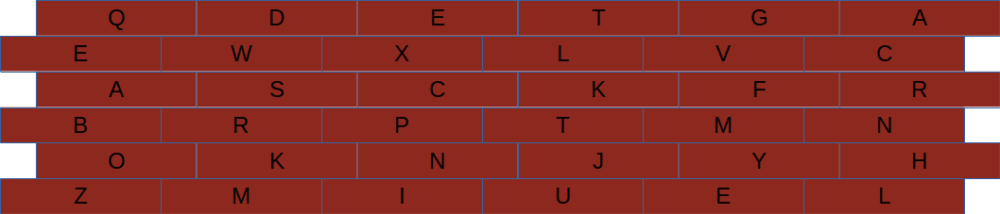

<< Back to index
<< Back to index
<< Back to index
<< Back to index
The silent monks of Sparkford Castle seem keen to flag something up, to improve our time machine maintenance habits.
You can check your location here:
When you get there, you can solve this:
In a manuscript the monk was busy illuminating, you find these notes:
There are also some letters etched into the castle wall:
You can check your answer here: